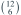
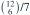

6 张 +1 卡与 6 张 −1 卡随机排序。从 0 开始逐张累计，所有中途累计和均非负的概率为？
- A

- B

- C

- D

我已思考，展开答案与解析
正确答案：B
- 所有符号序列有

种，合法路径有 Catalan 数
种，故概率为 1/7。
易错提醒先明确分布参数、独立性和统计量的定义，再进行计算。
用户提供练手卷 · 原第 19 题；题目 PDF 第 4 页
单选改编；题干与选项已重新编排

种，合法路径有 Catalan 数
种，故概率为 1/7。用户提供练手卷 · 原第 19 题；题目 PDF 第 4 页
单选改编；题干与选项已重新编排